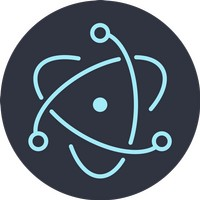

The Web
Categorie
Full Stack Development
Profiel Native App Developer

Met native App wordt een App bedoeld die speciaal is gemaakt voor mobiele apparaten zoals Android en iOS. Belangrijke voordelen van een native App zijn maximale benutting van technische componenten, features zoals camera, flits, microfoon, geolocatie, door fabrikant in mobiele apparaat gebakken, én met maximale performance.
→ zie: Wikipedia Native Apps
Resources

Omdat een native App speciaal wordt geprogrammeerd met een versie voor Android én een versie voor iOS vergt dat ontwikkelen, en later beheren met updates, dubbele resources, dus 2x bemensing, tijd en geld. En na al die moeite dan nog werkt de App niét op laptops en desktops ofwel niet op Windows, macOS en Linux. Om alle apparaten af te dekken, en hoge DevOps kosten te minimaliseren, is er een trend naar andere aanpak.
Andere Aanpak

Oorsprong van Native Apps is dat vanwege zuinig verbruik van batterij en daardoor ook geen actieve koeling nodig, mobiele telefoons en later tablets gemaakt werden met ARM processor (ipv x86). Nadeel toen van ARM architectuur was slechte performance en Android en iOS werden op die specificatie getuned. En aldus werden alle Apps speciaal gemaakt met programmeertalen voor Android en voor iOS: beiden onderstaand verder uitgewerkt.
Nu, zoveel jaar later, zijn ARM processors nog steeds zuinig in stroomverbuik maar wél veel sneller geworden! De stelling lijkt gerechtvaardigd dat een 8nm ARM Exynos 9820 system on a chip (SOC) met 8 cores sneller is dan een server-CPU in een datacentrum zo'n 7 jaar geleden. Performance is eigenlijk geen issue meer. Om die reden is er nu softwarematig meer mogelijk, vandaar het navolgende.
→ zie: Wikipedia Exynos ARM based SOC
- Hybride Apps
-

Voorbije jaren zijn programmeertalen ontwikkeld die 'write once use everwhere' mogelijk maken. Apps die zo zijn ontwikkeld worden hybride genoemd en kenmerken zijn: web based HTML, CSS en JavaScript, en de code wordt geinterpreteerd en executed door zelfde soort engine als die zit in browsers zoals Firefox, Chrome, Safari, MS Edge.
→ zie: Wikipedia Electron
- Progressive webApps
-
Als een hybride Apps dezelfde gebruikerservaring heeft als native Android of iOS, én voldoet aan hieronder gestelde criteria dán worden deze Progressive webApps (PWA) genoemd. Kenmerken zijn:
- Ongeacht online vs offline - de App blijft werken
- Responsive draait op elke form factor desktop, mobiel, tablet of whatever
- JS Service Worker voor pushmeldingen, achtergrond synchroniseren, cache, netwerk requests, gecentraliseerde updates
- Private en Secure door HTTPS verbinding
- Hardware toegang camera, microfoon, speaker, wifi, Bluetooth
- Gebruikers ervaring staat gelijk aan 'old skool' native App
- Installeerbaar ook zónder Google Play en Apple Store

Dus PWA's zijn webApps die éénmaal (1x) zijn ontwikkeld met éénmaal (1x) beheer, onderhoud en updates. Met "druk op knop" is er een versie voor Android én versie voor iOS én een Electron versie, geschikt voor alle OS'n Windows, macOS en Linux. Dus zo'n webApp functioneert op elk apparaat, ongeacht form factor en OS. Zie ook begin van deze guide:
→ zie: Front end vs Back end
→ zie: WebApp vs native App
→ zie: Progressive webApp (PWA)
→ zie: Native Apps vs Progressive webApps vs Algemene Verordening Gegevensbescherming (AVG)
- Decision Time!
-

Kijkend naar wat een willekeurige App zal worden geacht te doen, ofwel beoogde functionaliteit, dan kan gesteld worden dat ~80% van alle Apps kunnen worden gemaakt als een PWA. Dus voor ARM based Android en iOS én x86 based Linux, Windows en macOS. Zo'n App werkt prima op elke apparaat.
In dat geval is er geen reden om een native App te (leren) maken en kan gebruikt gemaakt worden van de 'write once use everwhere' aanpak. Zie daarvoor onderstaande profielen en videotorials.
- Profielen met Skill set
-
Basic Front End Web Developer
Full Fledged Front End Web Developer
Back End Web Developer Software
Back End Web Developer Database
Full Stack Web Developer
- Do the math
-
Gestel, niet geremd door legacy software, dan ligt het in de lijn der logica dat bedrijven en ontwikkelaars web presents baseren op basis van tools als in hierboven beschreven profielen met skill set. Het DevOps team beslaat dan met één pipeline 100% van websites en ~80% van Apps als zijnde PWA's; uitgaande van gelijke wegingsfactor waarbij een App een website ondersteund en vise versa een website een App, geeft (100+80)/2 = 90% van alles! BTW alsdan die éne pipeline is een ongekend voordeel van interoperability van resources. → zie: DevOps Pipelines
→ zie: Wikipedia Interoperabiliteit
- Check Feature plugins
-
Om te beslissen of een App native moet draaien zijn allerlei criteria zoals bestaande DevOps pipelines, legacy software, tijd en geld, bemensing, performance etc. Belangrijke factor is ook welke hardware features aangestuurd kunnen worden. Ionic en met name Capacitor kennen daarvoor plugins en zie hierna welke plugins nu al bestaan, of hoe die zelf te maken.
→ zie: Web Developer tools Ionic & Capacitor
Android native App
Android is een mobiel besturingssysteem op basis van een aangepaste versie van de Linux kernel en andere open source software, voornamelijk ontworpen voor mobiele touchscreen apparaten zoals smartphones en tablets. Android is ontwikkeld door een consortium van ontwikkelaars dat bekend staat als de Open Handset Alliance, met Google als belangrijkste leverancier en commerciële marketeer.
→ zie: Wikipedia Android
De kern Android broncode is free open source Android Open Source Project (AOSP). Hiermee zijn varianten van Android ontwikkeld voor een reeks andere elektronica, zoals gameconsoles, digitale camera's, pc's en andere, elk met een gespecialiseerde gebruikersinterface. Enkele bekende derivaten zijn Android TV voor televisies en Wear OS voor wearables, beide ontwikkeld door Google.
- Android Studio IDE
-

Android Studio is het door Google bestempelde officiele Integrated Development Environment en bevat een uitgebreide set ontwikkelingstools met een debugger, libraries, een mobiele telefoon emulator, documentatie, voorbeeldcode en tutorials.
→ zie: Wikipedia Android Studio IDE
→ zie: Website Android Studio download & get startedEr zijn meerdere IDE's zoals Eclipse, NetBeans en IntelliJ maar de focus en leidend is Android Studio, die hand in hand door Google wordt mee ontwikkeld met nieuwe ontwikkelingen van Android. Genoemde IDE's hebben op hoofdlijnen dezelfde technische mogelijkheden; maar het zijn specifieke details die een voorkeur geeft over de ander.
Android Studio support meerdere programmeertalen om Apps te maken voor het Android operating systeem. Talen zijn o.a. Java, C++, Kotlin en Go. Zo is de developer in staat om binnen die éne IDE omgeving meerdere technieken toe te passen.
- Welke Android programmeertaal
-
Google als drijvende factor achter Android heeft Kotlin gelanceerd als opvolger en vervanger van Java. Inmiddels is er de vraag welke programmeertaal te leren en gebruiken? Onderstaande tutorial maakt vergelijking tussen Java en Kotlin en komt met een advies.
- Java
-

Java van de firma Oracle is een (gedeeltelijk gratis) set computersoftware en specificaties als systeem voor het ontwikkelen van toepassingssoftware en de implementatie ervan in een platform onafhankelijke computeromgeving. Java wordt gebruikt in een breed scala aan computerplatforms, van embedded apparaten en mobiele telefoons tot bedrijfsservers en supercomputers.
→ zie: Wikipedia Java
→ zie: Website Oracle Java download & get started
- Kenmerken Java
-
Java is een programmeertaal voor algemene doeleinden en op klassen gebaseerd, objectgericht en ontworpen om zo min mogelijk implementatie afhankelijkheden te hebben. Het is bedoeld om developers eenmaal te laten schrijven en overal te laten werken. Gecompileerde Java code kan worden uitgevoerd op alle platforms die Java ondersteunen zonder dat er opnieuw gecompileerd hoeft te worden.
Java Apps worden meestal gecompileerd tot bytecode die op elke virtuele Java machine (JVM) kan worden uitgevoerd, ongeacht de onderliggende computerarchitectuur. De syntaxis van Java is vergelijkbaar met C en C++.
- Kotlin
-
Kotlin van de firma JetBrains is een free cross platform statisch getypeerde, algemene programmeertaal. Kotlin is ontworpen om volledig met Java samen te werken, en de JVM versie van zijn standaardbibliotheek is afhankelijk van de Java Class Library. Door de type inferentie is de syntaxis beknopter. Kotlin richt zich voornamelijk op de JVM, maar compileert ook naar JavaScript of native code (via LLVM).
→ zie: Wikipedia Kotlin
→ zie: Website Kotlin download & get started
- Kenmerken Kotlin
-
Kotlin is ontworpen als een objectgerichte taal van industriële sterkte en een "betere taal" dan Java, maar nog steeds volledig interoperabel is met Java-code, waardoor bedrijven een geleidelijke migratie van Java naar Kotlin kunnen maken.
Naast de klassen en methoden (member functies in Kotlin) van object georiënteerd programmeren, ondersteunt Kotlin ook procedureel programmeren met behulp van functies. Kotlin functies en constructors ondersteunen standaardargumenten, variabele lengte argumentlijsten, benoemde argumenten en overloading. Class member functies zijn virtueel, d.w.z. verzonden op basis van het runtime type van het object waarop ze worden aangesproken.
Apple native App
Apple heeft een eigen IT ecosysteem ontwikkeld op basis van Unix Berkeley Software Distribution . Eerst kwam Apple met macOS als afgeleide (fork) van Unix BSD. Daarna zijn op basis van macOS voor mobiel touch iPhone, en later andere apparaten, forks ontwikkeld zoals iOS, iPadOS, watchOS, tvOS.
→ zie: Wikipedia macOS
Zodoende is een familie van aan elkaar gerelateerde fork OS'n ontstaan. Kenmerkend verschil tussen de varianten is dat non touch macOS alleen geschikt is voor x86 processors en de wel touch OS'n zoals iOS alleen voor ARM processor.
→ zie: Wikipedia Apple ARM based SOC
- Xcode IDE
-
Xcode is een free (deels) opensource Apple geïntegreerde ontwikkelomgeving (IDE) met een reeks software ontwikkelingstools voor het ontwikkelen van software voor macOS, iOS, iPadOS, watchOS en tvOS.
→ zie: Wikipedia Xcode IDE
→ zie: Website Xcode get startedXcode ondersteunt broncode voor de programmeertalen C, C++, Objective-C, Objective-C++, Java, AppleScript, Python, Ruby, ResEdit (Rez) en Swift, met een verscheidenheid aan programmeermodellen, waaronder maar niet beperkt tot Cocoa, Koolstof en Java. Derden hebben ondersteuning toegevoegd voor GNU Pascal, Free Pascal, Ada, C#, Perl en D.
Xcode kan binaire bestanden met code voor meerdere architecturen bouwen met het uitvoerbare formaat Mach-O. Dit worden universele binaire bestanden genoemd, waarmee software op zowel PowerPC als Intel gebaseerde x86 platforms kan worden uitgevoerd en die zowel 32-bit als 64-bit code voor beide architecturen kan bevatten.
De iOS SDK wordt gebruikt voor het compileren en debuggen van applicaties voor iOS die worden uitgevoerd op ARM architectuur processors.
- Welke Apple programmeertaal
-
Objective-C was lange tijd dé programmeertaal voor Apple operatingsystemen. Er bestaat dus veel software in die taal geschreven. In 2014 lanseerde Apple de programmeertaal Swift als opvolger en vervanger van Objective-C. Inmiddels is er de vraag welke programmeertaal te leren en gebruiken? Onderstaande tutorial maakt vergelijking tussen Onbjective-C en Swift en komt met een advies.
- Objective-C
-
Objective-C is een algemene, objectgeoriënteerde programmeertaal die berichten in Smalltalk stijl toevoegt aan de C-programmeertaal. Het was de belangrijkste programmeertaal die door Apple werd ondersteund voor macOS, iOS en hun respectieve applicatie programmeerinterfaces (API's), Cocoa en Cocoa Touch, tot de introductie van Swift in 2014.
→ zie: Wikipedia Objective-C
- Kenmerken Objective-C
-
Objective-C is een dunne laag bovenop C en is een "strikte superset" van C, wat betekent dat het mogelijk is om elk C-programma te compileren met een Objective-C compiler en om C-taalcode vrijelijk op te nemen in een Objective-C-klasse
Het Objective-C-model van objectgeoriënteerd programmeren is gebaseerd op het doorgeven van berichten aan objectinstanties. In Objective-C roept men geen methode aan; men stuurt een bericht. Dit is anders dan het programmeermodel in Simula-stijl dat wordt gebruikt door C ++. Het verschil tussen deze twee concepten zit in de manier waarop de code waarnaar wordt verwezen door de methode of berichtnaam wordt uitgevoerd.
- Swift
-
Sinds 2014 heeft Apple de programmeertaal Swift voor werking op alle Ápple OS'n en is beoogd als verbetering voor Objective-C. Swift hanteert moderne concepten voor programmeertaal theorie en streeft naar een eenvoudigere syntaxis. Bij Swift zit ook de Bridging Header File waarmee Objective-C kan worden geconverteerd naar Swift.
→ zie: Wikipedia Swift
Bij aanvang maken van nieuwe Swift App wordt voorgesorteerd op:
- platform: wat voor een soort apparaat, en;
- application: welke soort functionaliteit
Swift ondersteund deze App varianten waaronder voor macOS zonder toich, en iOS, iPadOS enzovoorts met touch.
- Kenmerken Swift
-
Swift heeft functies die een aantal veel voorkomende programmeerfouten aanpakken, zoals null pointer dereferencing en biedt syntactische hulp om de the pyramid of doom te voorkomen.
Swift ondersteunt het concept van protocol uitbreidbaarheid, een uitbreidingssysteem dat kan worden toegepast op typen, structuren en klassen, dat Apple promoot als een echte verandering in programmeerparadigma's die ze "protocol georiënteerd programmeren" noemen.